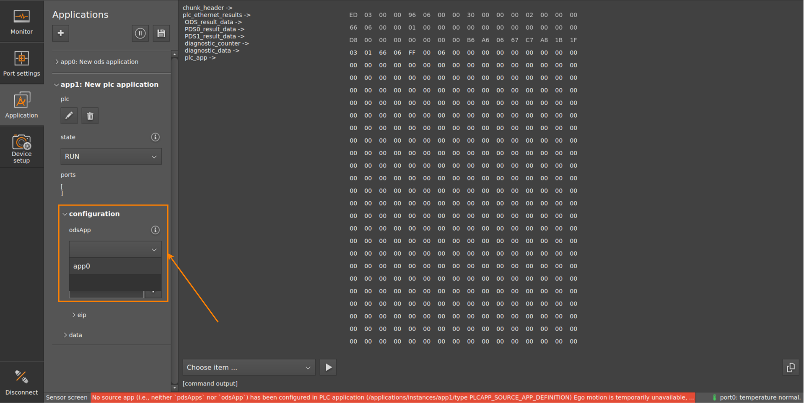
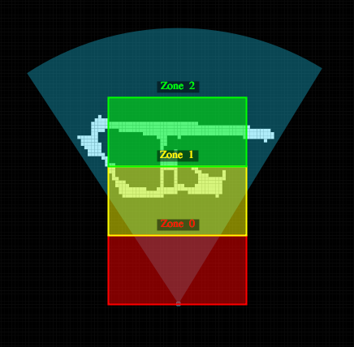
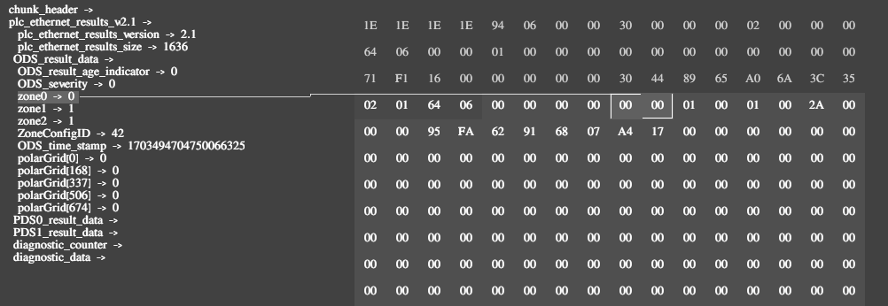

PLC application
The PLC application is an embedded O3C application provided by ifm. It functions as a server in the network configuration, with the Programmable Logic Controller (PLC) acting as a client simplifies the data exchange between ODS application and programmable logic controller (PLC) ensures safe navigation, efficient path planning, and timely responses to detected obstacles.
The data path is the same for both interfaces; only the PLC-facing transport differs:
O3C camera: ODS application <-> PLC application <-> TCP/IP (PCIC) or EtherNet/IP <-> PLC
Setup
Requirements
An O3C camera with ODS and the PLC application available in its installed firmware. Check the license on your device if ODS application is supported.
A PLC that supports at either TCP/IP or EtherNet/IP communication protocol.
TCP/IP (PCIC): The O3C camera hosts the server endpoint, and the PLC connects as a TCP client. They exchange data using ifm’s proprietary PCIC protocol.
EtherNet/IP: Configure the PLC and O3C camera using the assemblies and connection options described in the EtherNet/IP interface.
Configuration via ifmVisionAssistant
Before creating a PLC application, configure the ODS application and its presets. To create and configure the ODS application via ifmVisionAssistant, follow the steps described in Configuring and activating an application.
Create a PLC application in the same way as an ODS application.
Under
configuration->odsApp-> select the existing ODS application instance from dropDown menu to use for the PLC application as shown in the image below.

Parameter |
Description |
|---|---|
|
Custom name for the PLC application. |
|
Application state. |
|
Identifier of the ODS application instance, for example |
The PLC can allow user to
Set the maximum height for Zones defined in the ODS application.
Enable/Disable overhanging load detection defined in the ODS application.
Selection of the zone set / preset.
Important
The PLC application cannot create new or edit the existing preset configuration. So make sure that you configure the presets/overhanging loads under ODS application.
Save the configuration on the O3C device so it is restored after restart.
Note
For TCP/IP, the PLC application sends data without waiting for acknowledgement. Additional network load can cause network saturation and communication delays.
If diagnostics are raised during configuration or operation, review the diagnostic documentation.
Verify the data
ifmVisionAssistant supports live interactive data exploration for debugging. The following examples show zone occupancy and data-frame exploration:


Implement a TCP client for the PCIC framing and result data described in the TCP/IP communication interface. For EtherNet/IP, use the assemblies and data structures described in the EtherNet/IP interface.